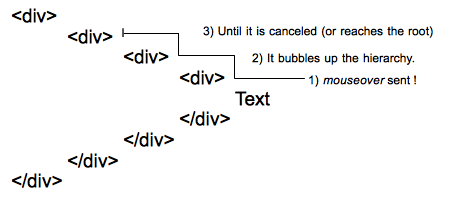

mouseenter event is sent to each element of the hierarchy when entering them. Here 4 events are sent to the four elements of the hierarchy when the pointer reaches the text.

A single mouseover event is sent to the deepest element of the DOM tree, then it bubbles up the hierarchy until it is canceled by a handler or reaches the root.